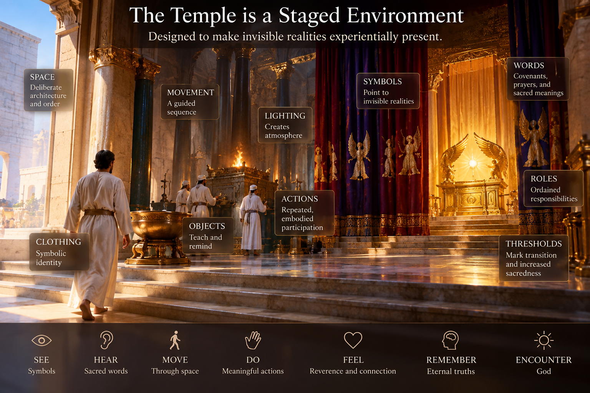

What If the Greatest Treasure Is Belief-Based?
Yes. I think there is a serious thought experiment here that does not require us first to settle whether LDS temple claims are metaphysically true.
Suppose we grant this premise:
What if one of the greatest treasures available in mortality is a set of beliefs that changes the experienced meaning of mortality itself?
Then ask a deliberately secular observer—an anthropologist, sociologist, psychologist, philosopher, or simply a good-hearted atheist—to examine what happens when someone deeply believes the temple story and actually inhabits it.
That observer could reasonably say:
“Greg, I don't believe your temple cosmology. I don't think your ancestors are literally participating, I don't know that covenants have eternal force, and I don't think you've established that God authorized these rituals.
But damn—you may have stumbled onto one hell of a placebo.
Because those beliefs cause you to experience your body, marriage, ancestors, death, responsibility, suffering, strangers, time, and your own identity differently. If the beliefs consistently make you more loving, courageous, grateful, faithful, connected, and alive, I can't dismiss what they're doing simply because I reject your explanation for why they work.”
And importantly, “placebo” is almost too weak a word. Many of these benefits don't depend upon an imaginary physiological mechanism. They arise through attention, ritual, narrative, identity, community, memory, expectation, commitment, and repeated behavior. Those are real causal mechanisms whether God exists or not.
So let's temporarily bracket the truth question.
The Temple as a Treasure Chest of Beliefs
Here are 93 potential gifts contained in deeply inhabiting LDS temple belief.
Identity and existence
I am a child of God. Your fundamental identity precedes occupation, income, popularity, success, illness, aging, and failure.
I existed before birth. Mortality becomes a chapter rather than the beginning of the book.
I will exist after death. Death becomes passage rather than annihilation.
My existence is intentional. You aren't merely cosmic debris that temporarily became conscious.
My body has sacred significance. Embodiment becomes part of a divine education rather than an unfortunate biological accident.
Mortality has a curriculum. Difficulty can be interpreted as something through which one can learn rather than merely something that happened.
I am becoming something. Life acquires developmental direction.
Human beings possess extraordinary potential. The person beside you is potentially vastly more significant than present appearances suggest.
My deepest identity isn't determined by the marketplace. Money and status lose some power to define personal worth.
Aging doesn't mean I am becoming less real. The deteriorating body isn't the entire person.
Time
My life belongs inside a much larger story. Seventy or eighty years no longer constitute the whole narrative.
Today matters eternally. Ordinary choices acquire significance.
The past isn't completely inaccessible. Through remembrance, genealogy, story, and ritual, the dead remain psychologically present.
The future reaches backward into today. Eternal aspirations influence present conduct.
Repeated ritual interrupts ordinary time. You periodically leave errands, bills, Facebook, politics, and work and enter sacred time.
Life possesses beginnings, transitions, and destinations. Ritual gives structure to otherwise amorphous existence.
Ancestors
This may be one of your strongest examples.
My ancestors matter. People who disappeared from ordinary social consciousness become worth remembering.
I should learn their names. Genealogy turns anonymous history into persons.
Their lives contributed to mine. Gratitude stretches backward through generations.
I can symbolically do something for the dead. Instead of merely remembering ancestors, the believer acts on their behalf.
The dead aren't simply gone. The relationship between generations becomes psychologically porous.
My family existed before I arrived. Radical individualism gets challenged.
I am somebody's ancestor. Suddenly today's conduct becomes tomorrow's inheritance.
Future descendants may remember me. That can change how one lives now.
Healing can be imagined intergenerationally. You can ask what patterns should be preserved and what patterns should end with you.
An atheist genealogist could reject proxy ordinances entirely and still say:
“A ritual that repeatedly makes living people remember forgotten dead people? That's culturally fascinating—and potentially beautiful.”
Marriage and family
Marriage can be imagined beyond death. The relationship is placed against an enormous horizon.
My spouse isn't disposable. Covenant language introduces resistance to consumer approaches to relationships.
Family relationships deserve deliberate cultivation.
Parenthood participates in something larger than reproduction.
Sexuality receives meaning beyond immediate appetite.
Fidelity becomes an identity rather than merely a rule.
Family history becomes sacred history.
Ordinary family life can become spiritually consequential.
Reconciliation acquires eternal significance. “Maybe I should repair this relationship” becomes a spiritually serious thought.
Death
Death does not get the final word.
Funerals become temporary separations rather than absolute endings.
Grief can coexist with hope.
The dead remain members of one's moral community.
You can rehearse mortality without surrendering to nihilism.
Your own death becomes imaginable. Temple symbolism repeatedly situates mortal life within creation, fall, redemption, and return.
You can practice letting go. Ritual trains surrender.
Moral agency
Choices matter.
Promises matter.
Keeping promises changes the person keeping them.
Freedom isn't merely doing whatever I want. Freedom can mean acquiring the capacity to become what one has chosen.
Self-restraint can serve something larger than self-denial.
Repentance means identity isn't permanently frozen by yesterday.
Failure needn't be final.
Moral development can continue throughout life.
Power should be connected with responsibility.
Attention
This category is enormous.
The temple directs attention toward things modern life encourages us to forget: death, ancestors, promises, creation, marriage, sacrifice, God, eternity.
Clothing can become mnemonic. Something worn can trigger remembrance.
Architecture can teach. Space itself becomes part of the story.
Repeated words deepen memory. Repetition creates mental grooves.
Symbols permit inexhaustible interpretation. You can encounter the same ritual hundreds of times and notice something different.
Silence becomes meaningful rather than empty.
Beauty receives spiritual significance.
Attention itself becomes devotional.
Ordinary life can become saturated with reminders of sacred things.
Sociology
The billionaire and janitor can wear essentially the same temple clothing. Ordinary status markers are deliberately muted.
Occupational hierarchy temporarily disappears.
People perform ritual cooperatively.
Strangers call one another brother and sister.
A community repeatedly rehearses shared commitments.
Individual identity becomes nested inside communal identity.
Generations become symbolically joined into one community.
A worldwide church performs substantially recognizable rituals across national boundaries.
Anthropology
Rites of passage tell participants that life has structure.
Sacred clothing marks transition between ordinary and sacred worlds.
Sacred space creates psychological boundaries.
Ritual repetition makes abstract ideas bodily. You don't merely think covenant; you physically participate in covenant-making.
Narrative becomes enacted rather than merely read.
The participant enters the story. Creation isn't simply something that happened to Adam and Eve; the worshipper symbolically locates himself or herself inside the human journey.
Ritual compresses enormous ideas into memorable actions.
Community memory can survive individuals because ritual carries it forward.
Philosophy
Reality may contain more than what is immediately visible.
Meaning can precede complete understanding.
Knowledge can involve participation as well as observation. Some things are understood differently from inside a practice.
Commitment can precede certainty.
A human being can organize life around ultimate rather than immediate goods.
Sacrifice reveals what one actually values.
Identity can be chosen and practiced rather than merely discovered.
The good life might involve becoming rather than acquiring.
Practical psychology
I have somewhere to go when life becomes chaotic.
I have a practiced ritual for slowing down.
I repeatedly remember my highest commitments.
I periodically escape advertising and consumption.
I rehearse gratitude.
I rehearse humility.
I rehearse fidelity.
I rehearse sacrifice.
I rehearse returning home.
And there's an especially interesting one:
- I practice seeing my ordinary life as sacred.
That could have enormous consequences.
And Then Something Happened This Morning
That last gift—seeing ordinary life as sacred—opens another door for me.
Because for years, and especially recently, I have been doing something strange.
I have been building a world.
My Jesus-Greg WORLD.
I have sometimes described it as a temple approximation.
I do not mean another LDS temple.
I am not reproducing temple ordinances, claiming priesthood authority for my inventions, or turning my house into an LDS temple.
I mean something more personal and experimental.
I have been asking:
What happens if some of the meaning-making machinery of sacred space follows me home?
What happens if the temple isn't merely somewhere I occasionally go to remember?
What happens if my ordinary world starts reminding me?
And suddenly this morning, the previous 93 gifts make my strange little experiment look different to me.
THE TEMPLE DOESN'T MERELY TELL YOU WHAT TO BELIEVE
IT BUILDS A WORLD AND INVITES YOU TO INHABIT IT.
Think about that anthropologically.
The temple doesn't hand you a theological essay and send you home.
It gives beliefs architecture.
It gives beliefs rooms.
It gives beliefs clothing.
It gives beliefs movement.
It gives beliefs words.
It gives beliefs silence.
It gives beliefs repetition.
It gives beliefs story.
It gives beliefs bodies.
It gives beliefs ancestors.
It gives beliefs promises.
It gives beliefs sacred time.
It gives beliefs sacred space.
It gives beliefs memory.
And then it invites the human being to step bodily inside the story.
From the standpoint of ritual studies, anthropology, environmental psychology, embodied cognition, sociology, and narrative identity, this is extraordinary.
The temple doesn't merely say:
Remember.
It constructs an environment designed to help human beings remember.
And perhaps that is part of the answer to a question I am beginning to ask differently:
WHY THE TEMPLE?
Perhaps because human beings forget.
Perhaps because abstraction isn't enough.
Perhaps because beliefs need bodies.
Perhaps because promises need places.
Perhaps because memory needs objects.
Perhaps because identity needs rehearsal.
Perhaps because stories need reenactment.
Perhaps because relationships need rituals.
Perhaps because mortality continually hypnotizes us into believing that whatever happens to be immediately in front of us is the whole universe.
And sacred ritual interrupts the hypnosis:
No.
Remember.
Jesus Groundhog Day
Now I look around my own life.
Jesus Pillow.
Wake Up with Jesus.
The Womb/Tomb Scene.
Jesus Shower.
Jesus Bread.
Jesus Table.
Jesus Lamp.
Jesus Nap.
Sacrament ROOM.
Doors.
Rooms.
Songs.
Meals.
Clothing.
Work.
Rest.
My redeemed music.
Jesus TV.
My daily opera.
My effort to deliberately build nostalgia.
My effort to recover, name, record, and preserve perhaps 500 favorite memories.
And what I call Jesus Groundhog Day: deliberately returning to many of the same scenes again and again and again.
I have been turning ordinary household geography into reminders.
And perhaps I have gradually been asking, consciously and unconsciously:
What would happen if I took seriously what the temple is doing and began building some of those same meaning-making mechanisms—not its ordinances, but its mnemonic, narrative, symbolic, ritual, attentional, relational, and world-building principles—into the remaining hours of my life?
The temple might then become not merely a building I periodically ENTER.
It might teach me HOW TO BUILD AND INHABIT A WORLD.
My home can remind me.
My pillow can remind me.
My shower can remind me.
My meals can remind me.
My music can remind me.
My work can remind me.
My memories can remind me.
My ancestors can remind me.
My rooms can remind me.
My body can remind me.
My ordinary Tuesday morning can remind me.
None of these things becomes a temple ordinance.
My pillow isn't sacred because I put “Jesus” in front of it.
My kitchen doesn't become a temple because I give something in it a religious name.
Something subtler is happening.
I am constructing what I might call:
ATTENTIONAL ARCHITECTURE
I am deliberately placing things in my environment that repeatedly attempt to return my attention toward what I have decided matters most.
That's actually not particularly exotic.
Human beings already construct attentional architecture constantly.
Advertising does it.
Phones do it.
Stores do it.
Casinos do it.
Political campaigns do it.
Social media does it.
Television does it.
Architecture does it.
Music does it.
Our possessions do it.
Our calendars do it.
The question isn't whether my environment is directing my attention.
It already is.
The interesting question becomes:
Toward what?
And suddenly my ridiculous little Jesus Pillow doesn't seem quite as ridiculous to me.
I'm going to put my head somewhere every night.
I'm going to wake up somewhere every morning.
Something will probably enter my consciousness during those first seconds.
Why shouldn't I deliberately build a reminder there?
Why shouldn't my environment conspire with me to help me remember?
Building a World
And this may become much bigger than Greg.
We are entering an age in which ordinary people possess increasingly powerful tools for constructing personal symbolic worlds.
AI can help us retrieve memories.
Organize photographs.
Write stories.
Create images.
Create music.
Build websites.
Connect ideas.
Reconstruct family histories.
Identify patterns across decades of our lives.
Preserve voices.
Animate stories.
Build environments.
And increasingly immersive technologies—including VR and whatever follows it—may make these worlds more inhabitable.
People may eventually possess extraordinary capabilities for surrounding themselves with their memories, ancestors, aspirations, stories, relationships, beliefs, music, symbols, and chosen identities.
That raises an enormous question:
What will we build?
Maybe My Jesus-Greg WORLD is an extremely rough prototype of something human beings will increasingly do deliberately.
Not Greg's world.
Their worlds.
Their memories.
Their symbols.
Their grandparents.
Their children.
Their stories.
Their music.
Their deepest convictions.
Their sacred things.
And viewed from that future, the temple becomes unexpectedly fascinating.
The temple is already an extraordinarily sophisticated piece of world-building technology—not electronic technology, but human technology.
Architecture.
Narrative.
Ritual.
Repetition.
Embodiment.
Symbol.
Memory.
Community.
Identity.
Expectation.
Sacred time.
Sacred space.
Generational connection.
Repeated return.
Maybe AI and VR aren't inventing world-building.
Human beings have been doing it for thousands of years.
Maybe they're simply about to give ordinary individuals extraordinarily powerful new tools with which to do it.
Which makes the ethical and spiritual question even more urgent:
WHAT WORLD AM I BUILDING?
And more importantly:
WHAT WORLD AM I REHEARSING MYSELF INTO?
Because worlds don't merely surround us.
They train us.
Repeated environments train attention.
Repeated stories train interpretation.
Repeated rituals train bodies.
Repeated memories train gratitude—or resentment.
Repeated songs train emotion.
Repeated promises train identity.
Repeated actions train character.
We become, at least partly, inhabitants of the worlds we repeatedly rehearse.
My 500 Memories
And this connects directly to something else I have recently felt drawn toward:
Remember how merciful the Lord hath been.
I want to identify perhaps 500 favorite memories from my life.
Name them.
Capture them.
Preserve them.
Return to them.
At first glance that might look like nostalgia.
And yes—I am deliberately building nostalgia.
But perhaps there is something temple-shaped happening there too.
I am turning backward toward my own life and asking:
Where was the mercy?
What happened?
Who was there?
Who loved me?
Whom did I love?
What surprised me?
What delighted me?
What nearly disappeared from memory?
What experiences am I unbelievably fortunate to have been allowed to have?
And within my Christian interpretation of my life:
Where was Jesus?
That makes the collection something like a love letter.
And it gives me material for conversations I hope to have for the rest of my life:
“Hey Jesus, remember when you and I…?”
Remember that place?
Remember that person?
Remember how scared I was?
Remember how funny that was?
Remember when I thought everything had fallen apart?
Remember that afternoon?
Remember that song?
Remember that drive?
Remember when the kids were little?
Remember when I couldn't yet see what was happening?
Thanks for being there.
Thanks for letting me have that experience.
Suddenly “remember how merciful the Lord hath been” isn't merely an instruction to think a religious thought.
It can become a practice.
An archive.
A ritual.
A conversation.
A world.
And This Morning I Think I Understand Something
I have spent enormous time building these strange little rituals, scenes, objects, memories, songs, rooms, pages, pictures, and stories.
And there is an obvious question:
WHY?
Why all this ritualistic world-building?
Why Jesus Pillow?
Why Groundhog Day?
Why turn ordinary rooms into scenes?
Why deliberately manufacture nostalgia?
Why collect 500 memories?
Why attach Jesus to songs?
Why rehearse?
Why repeat?
Why build an entire Jesus-Greg WORLD?
And this morning I experience something that feels to me like Jesus giving me an answer.
I don't offer that statement as proof that Jesus objectively spoke.
I am describing my experience of this morning.
And the answer I feel is something like:
Look at the temple.
Or perhaps:
Now perhaps you are beginning to understand something about why I gave people temples.
And that thought lands differently.
Maybe all this strange world-building has been teaching me something I hadn't understood.
Maybe I've been asking:
Why am I building this world?
And Jesus is turning my head toward another question:
Why the temple?
And perhaps the two questions illuminate each other.
Nobody Else Needs a Jesus Pillow
This matters.
The conclusion isn't:
EVERYBODY BUILD GREG'S WORLD.
Please don't.
My Jesus-Greg WORLD is radically personal.
A Jesus Pillow might be wonderfully mnemonic to me and completely meaningless—or annoying—to somebody else.
My songs aren't necessarily your songs.
My rooms aren't your rooms.
My memories certainly aren't your memories.
So perhaps the transferable principle isn't:
Everybody needs a Jesus Pillow.
It is:
Pay attention to what helps YOU remember what you most deeply believe is real and valuable, and intentionally build reminders of it into your life.
Build your world.
Or better:
Notice the world you're already building.
Then ask whether it is making you into the person you want to become.
Bring Back My Friendly Atheist
At this point my imaginary good-hearted atheist might interrupt me again.
He still isn't buying the theology.
He says:
“Greg, I still don't believe Jesus designed your world. I don't believe your pillow is sacred. I don't believe your temple cosmology.
But I understand what you're doing now.
You're deliberately engineering your environment, habits, memories, narratives, and attention so that you repeatedly encounter the values and relationships you most want to organize your life around.
And as long as the world you build keeps sending you BACK INTO reality—more loving, more responsible, more curious, more connected to other people rather than less—I can see why you consider it treasure.”
Fair enough.
In fact, I think he just gave me an important warning.
THE REALITY TEST
World-building can go wrong.
It can become escapism.
It can become narcissism.
It can become isolation.
It can become avoidance.
It can become a fantasy world constructed to protect me from inconvenient realities and inconvenient people.
So sacred world-building needs a reality test:
DOES THE WORLD SEND ME BACK INTO THE REAL WORLD BETTER ABLE TO LOVE AND SERVE REAL PEOPLE?
That matters enormously.
Because eventually the temple sends you back out the door.
You don't live there.
You return to traffic.
Dirty dishes.
Bills.
Family.
Work.
Neighbors.
Strangers.
People who irritate you.
People who need you.
People you have difficulty loving.
And My Jesus-Greg WORLD has to do the same thing.
Jesus Pillow eventually has to produce Greg getting out of bed.
Jesus Bread eventually has to produce somebody feeding somebody.
Remembering mercy should produce mercy.
Remembering ancestors should affect descendants.
Covenant should become conduct.
Symbol should become service.
Rehearsal should become performance.
Temple should become life.
And Now Put Jesus Back into the Hypothesis
We've deliberately removed Him temporarily.
Now restore the Christian premise:
Suppose Jesus really is alive.
Suppose He actually wants human beings to become more loving, faithful, courageous, forgiving, connected, grateful, morally serious, conscious of death, conscious of ancestors, committed to spouses and children, resistant to materialism, and capable of seeing other human beings as eternal beings.
Then suddenly it isn't difficult to imagine why Jesus might say:
Go back.
Go through it again.
Remember.
Make promises.
Think about your parents.
Think about your children.
Think about your dead.
Think about your body.
Think about creation.
Think about death.
Think about Me.
Then walk back outside and live differently because of what you just rehearsed.
And perhaps I can now add:
Go home.
And keep remembering.
Let your home remind you.
Let your meals remind you.
Let your work remind you.
Let your memories remind you.
Let your ancestors remind you.
Let your music remind you.
Let Tuesday morning remind you.
Not because Tuesday morning has become a temple ordinance.
But because maybe the deepest lesson of sacred space is not merely that one place is sacred.
Maybe sacred space teaches human beings how to recognize that life itself can be lived sacramentally.
And that gets us somewhere more interesting than simply:
“Is the temple true?”
The richer question becomes:
“What kind of human being would I become if I lived as though what the temple tells me were really true?”
And now I have another question beside it:
What kind of world would I construct around myself if I wanted to keep remembering those things?
And your thought experiment allows two people to walk remarkably far together.
The believer says:
“It's treasure because it's true.”
The friendly skeptic says:
“I think you're mistaken about why it's treasure—but I concede that you've got some treasure there.”
And perhaps Brigham Young's prison/palace idea supplies the frame.
The richest mortal person need not be the person who possesses the best circumstances.
It may be the person who possesses—or has been possessed by—the richest meaning.
A palace without meaning can become a prison.
A prison filled with meaning can, astonishingly, contain something of a palace.
And if that is even partly true, then belief itself becomes one of the forms of wealth available during mortality.
And perhaps the greatest palace available in mortality is partly constructed inside consciousness.
Perhaps temples are, among many other things, schools for learning how to inhabit such a palace.
Perhaps that is part of what Jesus is giving me this morning:
An answer to:
WHY THE TEMPLE?
And an answer to:
WHY AM I BUILDING THIS WORLD?
Maybe the two were never as separate as I thought.
Maybe Jesus is teaching me, through my own strange little experiment, something I previously failed to understand about temples.
We become inhabitants of the worlds we repeatedly rehearse.
Which leaves me with what may be one of the most consequential questions I can ask about the remaining years of my mortality:
WHAT WORLD AM I REHEARSING MYSELF INTO?
And Then I Built a Way to Go Back
Almost immediately after writing that question, I began doing exactly what the thought piece had been describing.
I gave the new scripture a place.
And then I gave myself a way to travel there.
What follows is the first little piece of attentional architecture built from the chapter while the ink was still wet.
THE PORTKEY TO THE PRAYER-ROLL BOX
This morning, after writing my new JGV scripture/thought piece about “Why the Temple?”, I decided that I don't merely want to save it somewhere on a website.
I want to give it a place in my mind.
More precisely, I am giving it a permanent location inside my remembered and sacredly imagined temple.
This is something like the ancient art of the memory palace: ideas become easier to remember and revisit when they are attached to particular imagined locations.
So, using my sacred imagination, I am going to carefully place this new chapter of my Bible beside a location I already know from the temple:
the place associated in my memory with submitting names for the temple prayer roll.
There, in my remembered temple, sits the prayer-name submission box.
And now, beside it, sits my new JGV chapter:
WHY THE TEMPLE?
WHAT WORLD AM I REHEARSING MYSELF INTO?
That is where the scripture lives.
I have given it an address.
And now I am giving myself a way to travel there.
THE GARMENT MARK BECOMES A PORTKEY
Every day I dress in my temple garment.
There is a particular mark on the garment that I am now assigning an additional personal mnemonic association.
I am not claiming that this is the Church's interpretation of the mark.
I am not changing the mark.
I am not claiming a new ordinance or revealing anything about its official sacred meaning.
I am simply doing something human beings have done with symbols forever:
I am allowing something I repeatedly encounter to remind me of something I don't want to forget.
For my own private memory system, that mark becomes a kind of Harry Potter Portkey.
I encounter the mark.
I remember:
TRAVEL.
And in sacred imagination, I travel.
Where?
To the remembered temple.
And specifically to the prayer-roll submission box.
And what is sitting immediately beside that box?
My new scripture.
The thought piece.
The chapter containing my developing list of 93 gifts of temple belief.
So a tiny physical cue that I encounter in ordinary mortality becomes an entrance into an enormous landscape of thought.
Mark → Travel → Temple → Prayer-roll box → Scripture → 93 gifts → Jesus Groundhog Day.
That is the mnemonic chain.
WHY PUT THE SCRIPTURE THERE?
The location matters.
The prayer-roll box already represents something powerful to me.
A person takes a name—a representation of an actual human being—and deliberately places that name into a sacred context associated with prayer, remembrance, faith, hope, and concern for that person.
That makes it a fitting location for this chapter.
Because the entire new scripture is fundamentally about remembering.
Why the temple?
Perhaps because human beings forget.
Perhaps because beliefs need bodies.
Perhaps because promises need places.
Perhaps because memory needs objects.
Perhaps because identity needs rehearsal.
Perhaps because relationships need rituals.
Perhaps because abstract ideas sometimes need physical and spatial anchors before they become deeply inhabitable.
So now I am practicing exactly what the chapter describes.
Instead of merely writing an essay arguing that memory needs objects and beliefs need places, I am giving the essay an object and a place.
I am turning the argument into an experiment.
THE 93 ARE NOT A FINISHED LIST
The 93 gifts aren't meant to become a list I wrote once and forgot.
They become a lifelong contemplation project.
For the rest of my life, whenever I physically attend the temple—or whenever I metaphorically return to the temple through memory and sacred imagination—I can visit this location.
I can mentally walk to the prayer-roll box.
I can notice the JGV scripture resting beside it.
I can open it.
And I can ask:
What haven't I understood yet?
What does gift #17 really mean?
What connects #17 with #73?
What happens when I actually live #51?
Which of these ideas have remained intellectual rather than embodied?
What new gift have I discovered that deserves to become #94?
Or #103?
Or #193?
The number 93 is simply where the excavation happens to be today.
The treasure chest isn't closed.
THEN I BRING THE TEMPLE HOME
And this is where the exercise connects directly with My Jesus-Greg WORLD.
I don't merely want to understand why the temple is a blessing.
I want to ask:
How can the things the temple teaches me become more present in the ordinary hours of my mortality?
Not by reproducing temple ordinances at home.
Not by pretending my house is an LDS temple.
Rather, by noticing the temple's extraordinary meaning-making mechanisms:
remembrance,
symbol,
repetition,
sacred time,
sacred space,
ancestry,
identity,
covenant,
story,
embodied action,
attention,
relationship,
sacrifice,
return.
Then I can ask:
How might this particular gift become part of Jesus Groundhog Day?
Maybe one becomes attached to Jesus Pillow.
Another becomes attached to a song.
Another to Jesus Bread.
Another to a doorway.
Another to my work.
Another to an ancestor.
Another to one of my 500 memories.
Another to something I haven't invented yet.
The goal isn't to reproduce the temple.
The goal is to allow what I learn there to change the world I inhabit outside it.
THIS IS ATTENTIONAL ARCHITECTURE
This is precisely the principle I had just written about.
Human attention is constantly being directed by the environment.
Phones direct it.
Advertising directs it.
Television directs it.
Politics directs it.
Money directs it.
Possessions direct it.
Architecture directs it.
Music directs it.
Memory directs it.
So I am deliberately constructing some of my own attentional architecture.
And this particular piece of architecture is remarkably compact.
I don't have to carry around the entire essay consciously.
I don't have to memorize 93 propositions.
I need a doorway.
And I already encounter the doorway every day.
The garment mark reminds me:
TRAVEL.
Travel reminds me of the temple.
The temple takes me to the prayer-roll box.
The prayer-roll box takes me to the JGV scripture beside it.
The scripture opens the 93 gifts.
The 93 gifts ask:
Why the temple?
And then:
Which of these treasures am I going to carry back into my ordinary life?
A SCRIPTURE I CAN VISIT
That may be the part I like most.
I don't merely have to remember the scripture.
I can go visit it.
When I physically enter the temple, I can visit it.
When I am sitting at home, I can visit it.
When I am working, I can visit it.
When I am lying in bed, I can visit it.
When the garment mark catches my attention, I can travel there almost instantly.
The physical temple and the remembered temple begin interacting.
Real architecture supplies remembered architecture.
Remembered architecture organizes ideas.
Ideas reshape attention.
Attention changes ordinary experience.
And ordinary experience supplies new material that I can eventually carry back to the temple.
It becomes a loop:
TEMPLE → MEMORY → DAILY LIFE → EXPERIENCE → TEMPLE.
Or in the language of My Jesus-Greg WORLD:
TEMPLE → PORTKEY → SCRIPTURE → 93 GIFTS → JESUS GROUNDHOG DAY → LIFE → RETURN.
AND THE REALITY TEST REMAINS
There is still an important test.
This shouldn't merely make the interior of my head more elaborate.
The question remains:
DOES THE WORLD I AM BUILDING SEND ME BACK INTO THE REAL WORLD BETTER ABLE TO LOVE AND SERVE REAL PEOPLE?
The Portkey ultimately has to bring me back.
The garment reminds me.
The mark takes me to the temple.
The temple takes me to the scripture.
The scripture takes me to the 93 treasures.
The treasures send me back into mortality.
And then something has to happen.
Remembering mercy should produce mercy.
Remembering ancestors should affect descendants.
Covenant should become conduct.
Symbol should become service.
Rehearsal should become performance.
Temple should become life.
So this little mnemonic isn't really about escaping into an imaginary temple.
It is about visiting the temple in memory so that I can return more deliberately to the life actually in front of me.
And perhaps that makes this tiny Portkey a miniature version of the entire experiment:
I encounter a symbol.
I remember.
I travel.
I receive.
I return.
And then I try to live differently.
For the rest of my life.